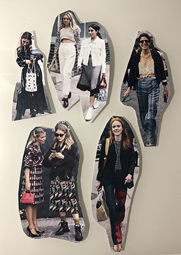
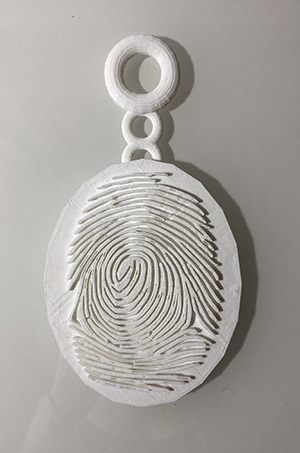
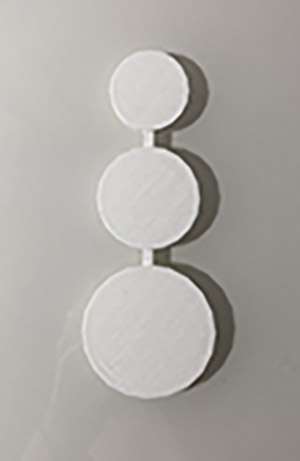
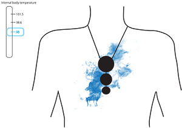
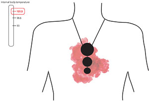
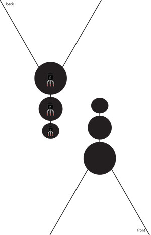

Designers Lizette Ayala and Jo Biscailuz and I began a collaboration research project on wearable
technology
and how the usability and aesthetics of it influence societies feelings about it and the overall usage of a specific
wearable tech piece. As the project progressed we each moved in our own directions to create three unique
explorations of wearable technology. For these explorations I chose to focus on the question: What constitutes wearable?
and how the usability and aesthetics of it influence societies feelings about it and the overall usage of a specific
wearable tech piece. As the project progressed we each moved in our own directions to create three unique
explorations of wearable technology. For these explorations I chose to focus on the question: What constitutes wearable?
Research
Our research is to explore the intersectionality between aesthetics and functionality within wearable technology.
Can they go hand in hand? Are they in competition with one another? Lastly, how fluidly could these machines function in an environment?

click here for sources and summaries
Our research is to explore the intersectionality between aesthetics and functionality within wearable technology.
Can they go hand in hand? Are they in competition with one another? Lastly, how fluidly could these machines function in an environment?
click here for sources and summaries
2D Exploration
In honor of street style and fashion week I chose to experiment the idea of legitimately wearing various
technical components by taking various photos of bloggers from fashion week and photoshopping chipboard pieces on
top of one element of their outfits. Street style has become an iconic part of fashion week and a time for
experimentation in fashion, if wearables could survive here they can make it anywhere.
In honor of street style and fashion week I chose to experiment the idea of legitimately wearing various
technical components by taking various photos of bloggers from fashion week and photoshopping chipboard pieces on
top of one element of their outfits. Street style has become an iconic part of fashion week and a time for
experimentation in fashion, if wearables could survive here they can make it anywhere.

3D Exploration
In my next exploration I chose to look more into the idea of what technically is wearable.
We normally associate wearable with things that we have to physically wear like a shoe, watch,
or shirt. I took this opportunity to challenge that idea by framing a wearable as something that we
would constantly have with us but we do not necessarily have to wear. My 3D iteration was a
keychain that would serve as a key for the user after they scanned their fingerprint into it.
As someone who is constantly locking themselves out of their apartment I felt that creating something
you can attach to your bag or wallet could help eliminate this problem. I chose to 3D print a
prototype of this keychain to properly show a scaled up version of not only the
fingerprint but the shape and overall feeling of this piece.
In my next exploration I chose to look more into the idea of what technically is wearable.
We normally associate wearable with things that we have to physically wear like a shoe, watch,
or shirt. I took this opportunity to challenge that idea by framing a wearable as something that we
would constantly have with us but we do not necessarily have to wear. My 3D iteration was a
keychain that would serve as a key for the user after they scanned their fingerprint into it.
As someone who is constantly locking themselves out of their apartment I felt that creating something
you can attach to your bag or wallet could help eliminate this problem. I chose to 3D print a
prototype of this keychain to properly show a scaled up version of not only the
fingerprint but the shape and overall feeling of this piece.

Interactive Exploration
My final dive into wearable technology was a piece rooted in interaction. I created a
prototype of a necklace that incorporated a temperature sensor to keep track of the wears core
temperature and if it were to rise or drop the necklace would then emit cooling or heating
pulses to correct it. Again I chose to 3D print the physical pendant for the necklace and then created
Illustrator files that show how the interaction would work.
My final dive into wearable technology was a piece rooted in interaction. I created a
prototype of a necklace that incorporated a temperature sensor to keep track of the wears core
temperature and if it were to rise or drop the necklace would then emit cooling or heating
pulses to correct it. Again I chose to 3D print the physical pendant for the necklace and then created
Illustrator files that show how the interaction would work.




Through not only research but through multiple rounds of ideation and prototyping this project
helped
me gain insight on the world of wearable technology and pushed me to go through multiple
rounds of experimentation within the same theme. I was able to push myself to create three projects
that reflected wearable technology in three different ways. I learned that integrating technology into
fashion is not as simple as throwing a step counter in a sneaker and to truly integrate
technology and fashion the designer has to consider both the usability and aesthetic value of what they
are creating - not discount one to serve the other.
me gain insight on the world of wearable technology and pushed me to go through multiple
rounds of experimentation within the same theme. I was able to push myself to create three projects
that reflected wearable technology in three different ways. I learned that integrating technology into
fashion is not as simple as throwing a step counter in a sneaker and to truly integrate
technology and fashion the designer has to consider both the usability and aesthetic value of what they
are creating - not discount one to serve the other.